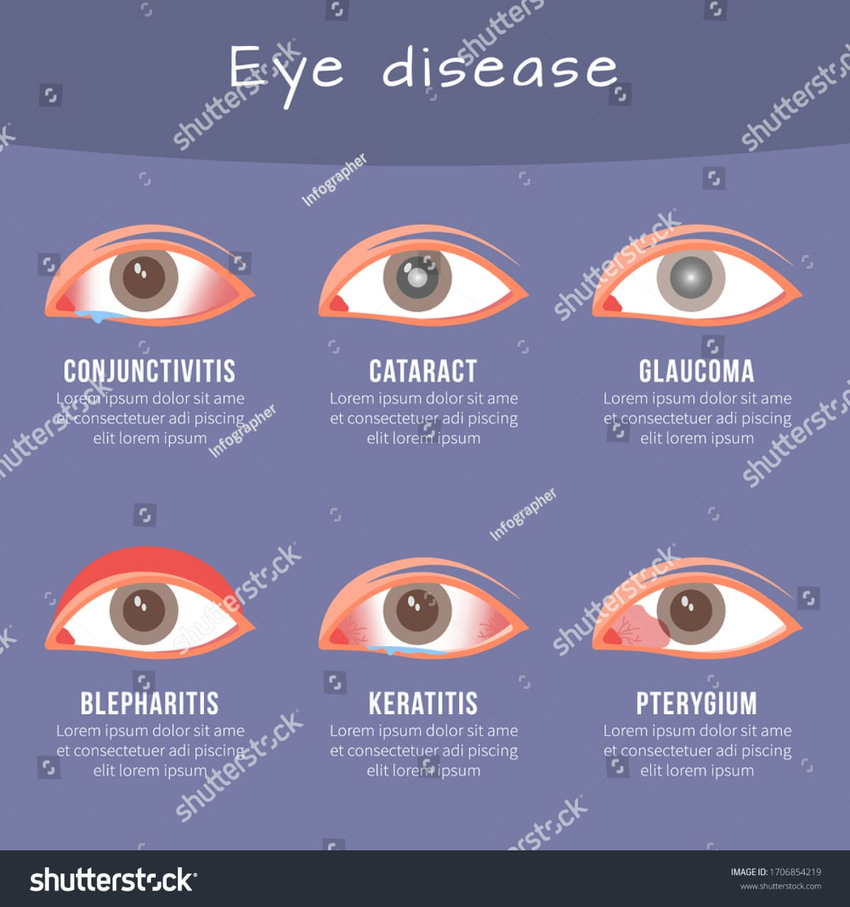

Eye Conditions
 Understanding common eye conditions is the first step towards maintaining good eye health. Some of the most prevalent eye conditions include:- Myopia (Nearsightedness): Difficulty seeing distant objects clearly.
- Hyperopia (Farsightedness): Difficulty seeing close objects clearly.
- Astigmatism: Blurred vision caused by an irregularly shaped cornea.
- Cataracts: Clouding of the eye's lens, leading to decreased vision.
- Glaucoma: A group of eye conditions that damage the optic nerve, often linked to high eye pressure.
- Macular Degeneration: Deterioration of the central part of the retina, leading to vision loss in the center of the visual field.
Eye conditions encompass a wide range of issues affecting vision and eye health, from common refractive errors to serious diseases. Refractive errors, including myopia (nearsightedness), hyperopia (farsightedness), astigmatism, and presbyopia, occur when the shape of the eye prevents light from focusing directly on the retina. These conditions are usually corrected with glasses, contact lenses, or refractive surgery. Cataracts, characterized by clouding of the eye's lens, and glaucoma, which damages the optic nerve often due to increased eye pressure, are other prevalent conditions. Age-related macular degeneration (AMD) and diabetic retinopathy are significant causes of vision loss, especially in older adults. AMD deteriorates the macula, responsible for central vision, while diabetic retinopathy damages blood vessels in the retina due to prolonged high blood sugar levels.
Less common but equally impactful eye conditions include keratoconus, where the cornea thins and bulges into a cone shape, and retinitis pigmentosa, a genetic disorder that causes gradual retinal degeneration. Uveitis, inflammation of the uvea (the middle layer of the eye), can result from infections, autoimmune disorders, or unknown causes, leading to severe vision impairment if untreated. Dry eye syndrome, a prevalent issue often related to aging, environmental factors, or prolonged screen time, causes discomfort and blurred vision. Conjunctivitis, or pink eye, an inflammation or infection of the outer membrane of the eyeball and the inner eyelid, is usually caused by infections, allergies, or irritants. Regular eye examinations are crucial for early detection and management of these conditions, helping to maintain eye health and prevent vision loss.
Prevention
Preventing eye problems before they start is crucial for long-term eye health. Here are some tips to help keep your eyes healthy:
- Regular Eye Exams: Schedule regular eye exams to detect and treat problems early.
- Protective Eyewear: Wear sunglasses that block UV rays and protective goggles when engaging in activities that could cause eye injury.
- Healthy Diet: Eat a diet rich in fruits, vegetables, and omega-3 fatty acids to support eye health.
- Avoid Smoking: Smoking increases the risk of developing eye diseases like cataracts and macular degeneration.
- Screen Breaks: Follow the 20-20-20 rule to reduce eye strain: every 20 minutes, look at something 20 feet away for at least 20 seconds.
Taking proactive steps to care for your eyes is essential in preventing various eye conditions and maintaining good vision. One of the most effective preventative measures is to schedule regular comprehensive eye exams. These exams can detect issues early, even before symptoms appear, and are especially important if you have risk factors such as diabetes, hypertension, or a family history of eye disease. Protecting your eyes from harmful UV rays by wearing sunglasses with 100% UVA and UVB protection is crucial to prevent conditions like cataracts and macular degeneration. Additionally, using protective eyewear during activities that could cause eye injuries, such as sports or certain work environments, helps prevent trauma to the eyes.
Maintaining a healthy lifestyle also plays a significant role in eye care. Eating a balanced diet rich in vitamins and minerals, particularly those found in leafy greens, fish high in omega-3 fatty acids, and colorful fruits and vegetables, supports eye health. Staying hydrated and avoiding smoking, which increases the risk of cataracts and AMD, are also beneficial. For those who spend long hours in front of screens, practicing the 20-20-20 rule (taking a 20-second break every 20 minutes to look at something 20 feet away) can reduce digital eye strain. Ensuring proper lighting and screen settings can also minimize strain. Finally, managing chronic conditions such as diabetes and hypertension through regular medical care, medication adherence, and lifestyle modifications can significantly reduce the risk of related eye complications like diabetic retinopathy and hypertensive retinopathy.
Treatments
.jpeg)
Various treatments are available for different eye conditions, helping to restore and maintain vision. Some common treatments include:
- Prescription Glasses and Contact Lenses: Corrective lenses are the most common treatment for refractive errors like myopia, hyperopia, and astigmatism.
- Medications: Eye drops and oral medications can treat conditions like glaucoma and infections.
- Laser Surgery: Procedures like LASIK can correct refractive errors by reshaping the cornea.
- Cataract Surgery: Removing the clouded lens and replacing it with an artificial one restores vision for those with cataracts.
- Injections: Anti-VEGF injections can treat macular degeneration and diabetic retinopathy by reducing abnormal blood vessel growth and swelling.
Eye surgeries address various conditions to restore or improve vision and eye health. Blepharoplasty, also known as eyelid surgery, removes excess skin, muscle, and fat from the eyelids to enhance appearance and peripheral vision. Cataract surgery involves replacing a clouded natural lens with a clear artificial intraocular lens (IOL), significantly restoring vision. Corneal transplants replace damaged or diseased corneal tissue with donor tissue, treating conditions like keratoconus and corneal scarring, thereby improving vision and reducing pain. Glaucoma surgeries, such as trabeculectomy and laser trabeculoplasty, reduce intraocular pressure to prevent optic nerve damage and preserve vision.
LASIK (laser in-situ keratomileusis) is a popular refractive surgery that reshapes the cornea using a laser to correct myopia, hyperopia, and astigmatism, often eliminating the need for glasses or contact lenses. Retina surgeries address conditions like retinal detachment, diabetic retinopathy, and macular degeneration through procedures like vitrectomy and laser photocoagulation, essential for preventing vision loss and restoring retinal function. Lastly, eye muscle surgery, or strabismus surgery, corrects eye misalignment by adjusting the eye muscles, improving binocular vision, reducing double vision, and enhancing cosmetic appearance. Each of these surgeries, supported by the National Eye Institute and the National Institutes of Health, plays a crucial role in maintaining and improving eye health.